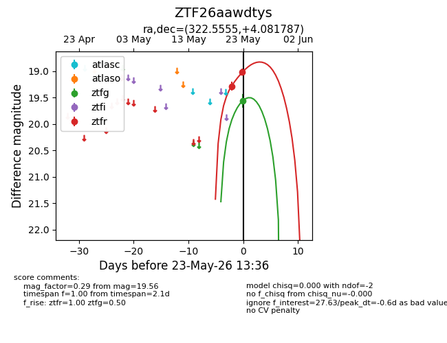
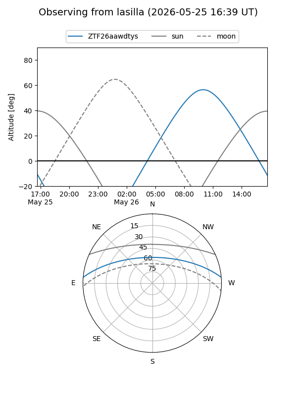
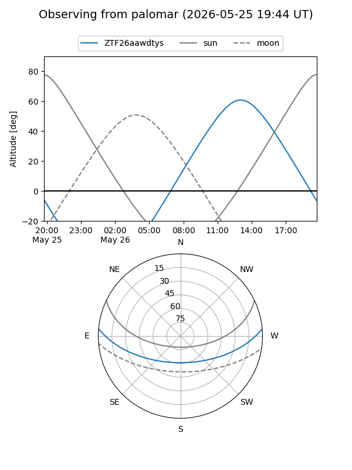
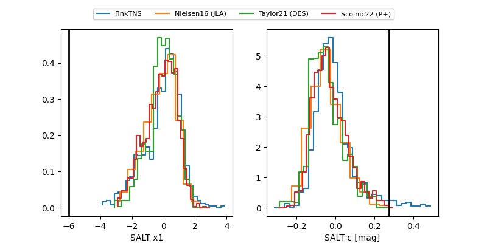

ZTF26aawdtys
Target ZTF26aawdtys at 2026-05-23 13:40
Aliases and brokers:
lsst-FINK: link
lsst-Lasair: link
lsst-ALeRCE: link
ztf-FINK: link
ztf-Lasair: link
ztf-ALeRCE: link
alt names
ZTF26aawdtys (ztf,fink_ztf)
Coordinates:
equatorial (ra, dec) = 322.5555,+4.08179
equatorial (HMS+DMS) = 21:30:13.31,+04:04:54.43
galactic (l, b) = (57.6841,-32.31332)
Flags:
Photometry:
last ztfg=19.56, ztfr=19.02
1 ztfg, 2 ztfr detections
Lightcurve

Visibility


Additional plots
